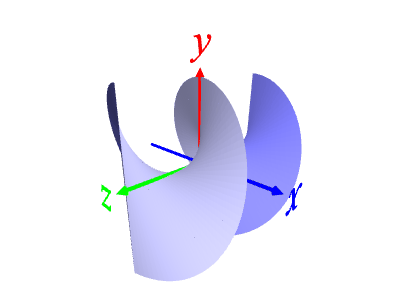
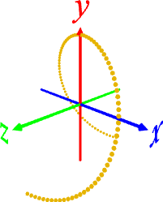
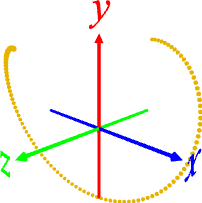
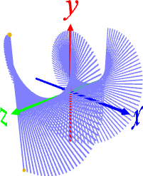
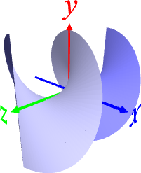

[1] 媒介変数を使って螺旋を作る
p curve np.linspace(-1,1,100) np.sin(T*np.pi) np.cos(T*np.pi) T

[2] 180°回転したコピーを作成する
p r 0 0 180 2

[3] P2 を転置し、棒が回転するような軌跡を作る
p2 transpose
p2 skeleton fast
d ･･･ 目視確認したら消す

[4] 棒が回転するような軌跡で面を張る
surface
